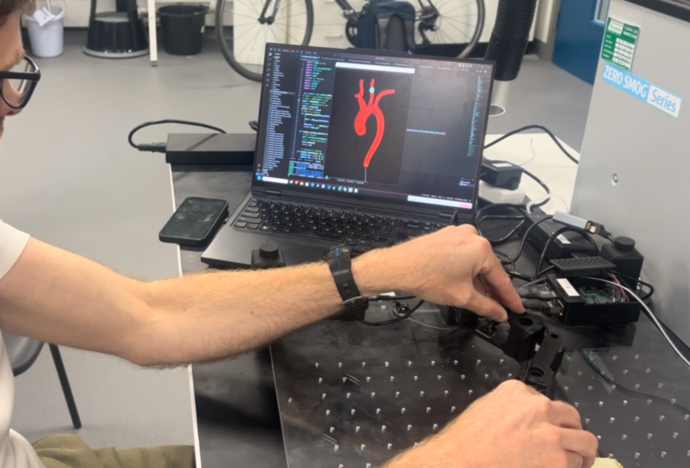
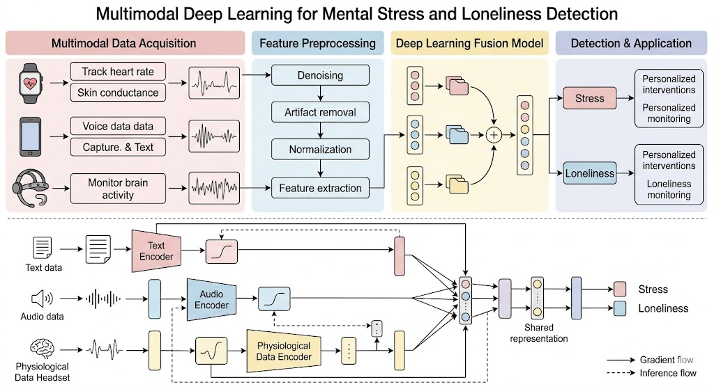
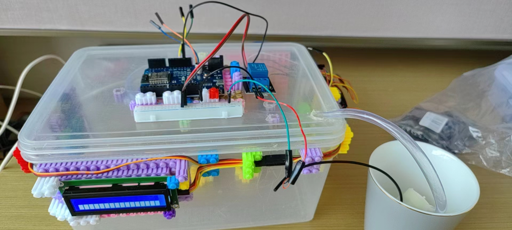
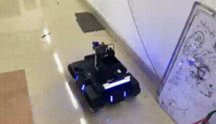
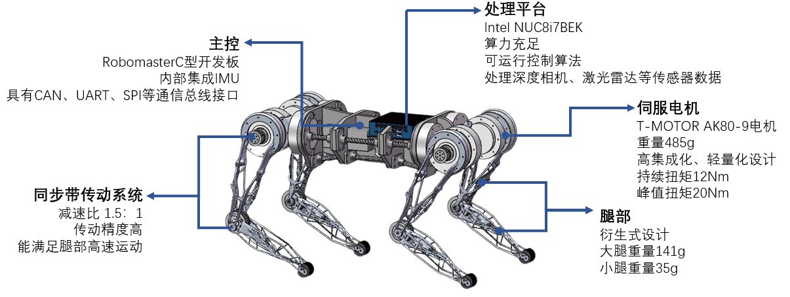

About Me
I am currently a PhD student at The Hong Kong University of Science and Technology (HKUST), supervised by Prof. Yang Gao and affiliated with the Centre for AI Robotics in Space Sustainability.
Previously, I completed my MRes in Healthcare Technologies at King's College London, supervised by Dr. Erika Molteni, Dr. Michela Antonelli and Dr. Thomas Booth. I obtained my BEng degree at South China University of Technology, majoring in Process Equipment and Control Engineering with a minor in Computer Science, supervised by Prof. Dong Zhang.
Beyond robotics, I am also a photography enthusiast and home cook. Click here to view some of my photography work.
Projects

A Toolkit For Tele-Operated Robotic Thrombectomy in Acute Stroke
Developed automated navigation for mechanical thrombectomy using PPO in the SOFA framework. Designed experiments comparing algorithm performance with human operation. Article expected to be published in 2025.

Multimodal Deep Learning for Mental Stress State and Loneliness Detection
Developed Transformer-based models for mental stress and loneliness detection with variable modal signal inputs. Explored modality loss effects and robustness enhancement methods.

Intelligent Plant Incubator
NUS School of Computing Summer Workshop 2022. Used Inception V3 for plant pest detection and LSTM for growth environment assessment. Grade: A

Dual Robot Task Collaboration under Rules based on Reinforcement Learning
3rd Prize at ICRA AI Challenge. Implemented YOLO V4 localization, A3C decision-making, Cartographer/AMCL navigation, and gimbal auto-targeting with 90%+ accuracy.

Research on the Structure and Algorithm of Bionic Quadruped Robot (SRP)
Dynamic analysis and biomimetic optimization using Fusion360. Reduced weight by 30% while maintaining mechanical strength. RoboCon 2021 Simulation Competition.
Publications
A Toolkit For Tele-Operated Robotic Thrombectomy in Acute Stroke
2025
Education
The Hong Kong University of Science and Technology
PhD in Mechanical Engineering
Supervisor: Prof. Yang Gao | Centre for AI Robotics in Space Sustainability
Sep 2026 - PresentKing's College London
MRes in Healthcare Technologies (GPA: 72/100, Distinction)
Supervisors: Dr. Erika Molteni, Dr. Michela Antonelli, Dr. Thomas Booth
Sep 2023 - Jan 2026South China University of Technology
BEng in Process Equipment and Control Engineering (GPA: 3.15/4)
Minor: Computer Science and Technology | Supervisor: Prof. Dong Zhang
Sep 2018 - Jun 2022Experience

National University of Singapore
School of Computing Summer Workshop 2022
Cluster: Deep Learning and Embedded System | Advisor: Dr. Colin | Grade: A
May 2022 - Aug 2022Imperial College London
MasterClass "Robotics, AI and IoT" - Fire Inspection Robot
Mentor: Dr. Penny Lo | Best Project | Grade: 95/100
Jan 2021 - Feb 2021Awards & Honors
3rd Prize - ICRA 2021 AI Challenge
International Conference on Robot and Automation
1st Prize - RoboMaster Championship
Chinese Undergraduate Competition for Robots, 2021
National Innovation Training Program
Merit Completion (Director)
1st Prize - RoboCon Simulation Competition
Quadruped Robot Simulation, 2020
Merit Student & University Scholarship
Top 25% at SCUT
2nd Prize - 32nd Chinese Physics Olympiad
CPhO, 2017
3rd Prize - 31st Chinese Physics Olympiad
CPhO, 2016